消息队列选型
消息队列
这是一篇对消息队列的详细总结（可能对于高可用和架构方面的总结还不够，未来会随着对知识理解的加深继续完善）。在项目中使用了 RabbitMQ，所以也记录了 RabbitMQ 的使用集成。
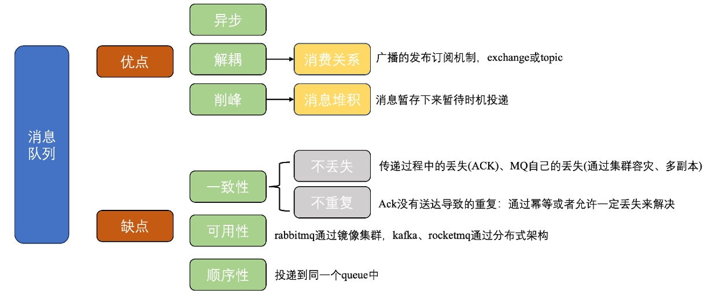
消息队列可以看成一个存放消息的容器，由于 Queue 是一种先进先出的数据结构，所以消息队列消费数据也是「按序」的。
消息队列基础
消息队列有什么作用
这部分来自 JavaGuide
异步处理
将服务中一些「非核心的耗时业务」以异步方式执行，将消息加入消息队列中之后就立即返回结果，减少响应时间。
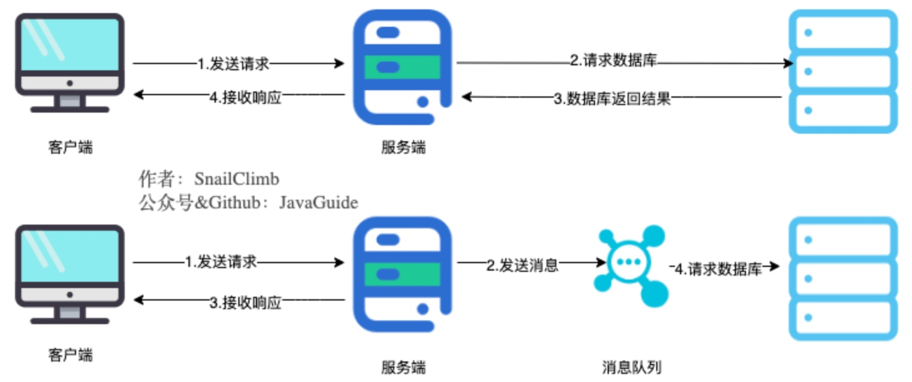
由于用户请求在将数据写入消息队列后就返回给用户，但是下游任务可能会因为各种情况而失败。所以在使用消息队列异步处理下游业务时还要进行一些流程上的修改——比如订机票、酒店时用户提交订单，后台将订单写入 MQ，不能立即返回订单提交成功，需要等待 MQ 中的订单消费者将订单出库后，再通过短信的方式通知用户。为了保证消息队列中的消息被消费，会将消息缓存在生产者服务器的 buffer 中，直到收到消费者服务器的成功消费通知。
削峰 / 限流
将短时间高并发产生的用户请求存储在消息队列中，然后后端服务根据自己的处理能力一点点消费这些请求，避免短时间内大量请求将后端服务打垮。也就是将后台服务系统的处理压力转移到消息队列中。
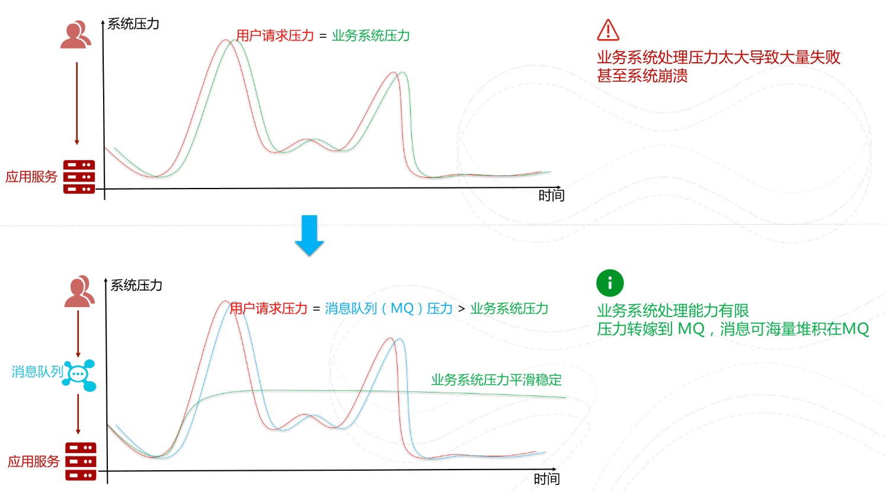降低系统耦合度
客户端将请求打到消息队列中，服务端来处理消息，这样做的好处是需要消费的业务直接去 MQ 中拿到消息进行消费而不需要和其他业务产生耦合，提高了系统的可扩展性。也就是将本身需要串行化关联调用的模块优化为各自独立的模块。

比如说在上图的商城系统中，使用消息队列将订单服务和其他服务完成解耦，假设需要新增风控服务，只需要让其订阅这个消息，实现网站业务的可拓展性。
消息队列的使用场景
除了上面所说的三大作用之外，消息队列还有一些其他的使用场景。
- MQ 作为分布式事务的解决方案之一
事务允许将事件流定义为一个原子操作。 - 顺序保证
- 延时、定时处理
- 数据流处理
针对分布式系统产生的海量数据流，如业务日志、监控数据、用户行为等，消息队列可以实时或批量收集这些数据，并将其导入到大数据处理引擎中，实现高效的数据流管理和处理。
合格的消息队列要满足哪些特点
消息有序性、消息不丢失、消息可堆积……
消息队列带来的问题
前面说了那么多使用消息队列的好处，但是凡事都有两面性，它在实际项目中也会带来一些问题，具体就要看业务中的需要。
- 一致性问题：也就是前面说的，在实现异步处理的同时，如果下游业务没有正确的消费消息，就会导致上下游服务数据不一致的情况。
- 系统复杂度提高
- 系统可用性降低
消息队列选型
RabbitMQ
RabbitMQ 是采用 Erlang 语言实现 AMQP 协议的消息中间件，常用于在分布式系统中存储转发消息。
AMQP 协议是一个应用层高级消息队列的二进制协议，它的特点是：①更好的跨语言、跨平台性； ②消息格式只能为 byte[]； ③exchange 提供 pub/sub 更多路由方式。
原理
RabbitMQ 的结构如下所示：
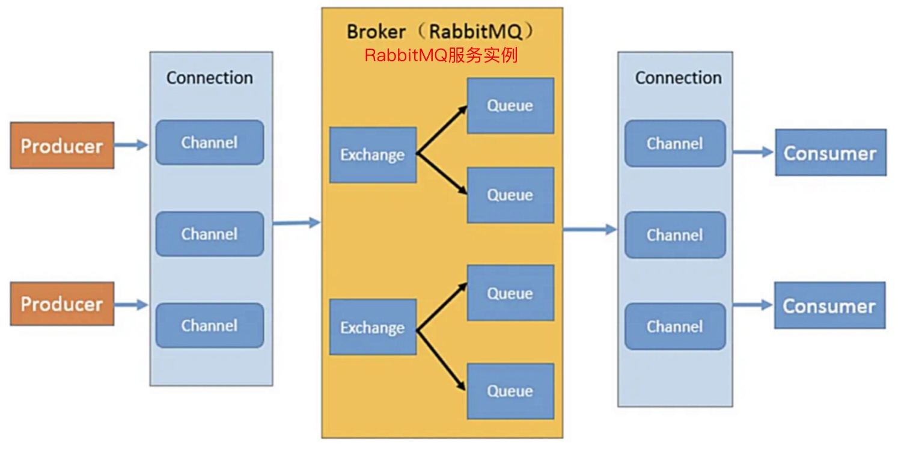
生产者和消费者
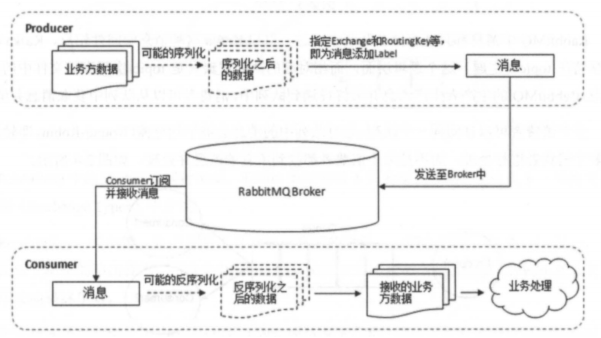消息
- 消息头（或标签label）
生产者将消息交给 RabbitMQ，RabbitMQ 根据消息头把消息发送给相应的消费者。- 「最核心」路由键 routing-key
- 消息优先级 priority
- 消息体(payload)
- 消息头（或标签label）
交换机 Exchange
消息不是直接加入消息队列 Queue 中，而是生产者将消息发送给交换器时，需要一个 RoutingKey，当 BindingKey 和 RoutingKey 相匹配时，消息才会被路由到对应的队列中。
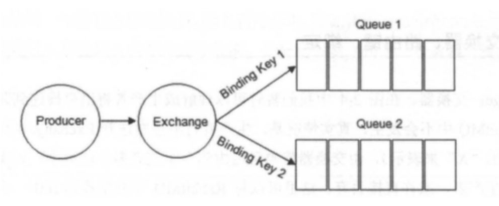
交换机的四种类型，对应着不同的路由策略：fanout
无需任何路由键的判断，直接把所有发送到该 Exchange 的消息广播到所有与它绑定的 Queue 中；direct
把消息路由到那些 Bindingkey 与 RoutingKey 完全匹配的 Queue 中；

topic
direct 的模糊匹配版本：规定 RoutingKey 和 BindingKey 为一个点号”.”分隔的字符串（被点号”.”分隔开的每一段独立的字符串称为一个单词）；BindingKey 有 “*”和”#”，分别用于匹配一个单词和多个单词；headers
不根据消息头的 RoutingKey 来路由消息，而是根据消息中的 header<key,value> 属性。性能很差，且不实用。
消息队列 Queue
多个消费者可以订阅同一个队列，这时候队列中消息会被平均分摊给多个消费者（轮询）。RabbitMQ 不支持「队列」层面的广播消费，也就是不支持一个队列的消息被多个消费者同时消费。信道 Channel
TCP 连接的创建和销毁开销较大，且并发数受系统资源限制，会造成性能瓶颈，所以 RabbitMQ 使用「信道」的方式来传输数据。TCP 被多个线程共享，每个信道在 RabbitMQ 都有唯一的 ID，保证了信道私有性，每个信道对应一个线程使用。
应用集成
- Mac 中环境搭建，为我们搭建整套 RabbitMQ 依赖的环境，包括 erlang 后台启动：
1
brew install rabbitmq
1
brew services start rabbitmq
在 RabbitMQ 配置页的其他配置，可参考：https://netfilx.github.io/spring-boot/8.springboot-rabbitmq/springboot-rabbitmq
- 项目配置
1
2
3
4<dependency>
<groupId>org.springframework.boot</groupId>
<artifactId>spring-boot-starter-amqp</artifactId>
</dependency>1
2
3
4
5
6
7spring:
rabbitmq:
host: 127.0.0.1 # 客户端，你的虚拟机IP
port: 5672 # 客户端端口
virtual-host: / # 虚拟主机
username: guest # 默认用户名
password: guest # 默认密码 - 发布消息
1
2
3
4
5
6
7
8
9
10
11
12
13
14
15
16
17
18
19
20
21
22public class RabbitmqServiceImpl implements RabbitmqService {
private RabbitTemplate rabbitTemplate;
private DirectExchange directExchange;
public <T> void publishDirectMsg(MessageQueueEvent<T> messageQueueEvent, String key) {
this.publishDirectMsg(messageQueueEvent, key, true);
}
public <T> void publishDirectMsg(MessageQueueEvent<T> messageQueueEvent, String key, boolean isPersist) {
// 消息头中的优先级、是否持久化等配置
MessageProperties messageProperties = new MessageProperties();
messageProperties.setDeliveryMode(isPersist? MessageDeliveryMode.PERSISTENT: MessageDeliveryMode.NON_PERSISTENT);
// MessageConverter:将Java对象转换为RabbitMQ的消息
Message message = rabbitTemplate.getMessageConverter().toMessage(messageQueueEvent, messageProperties);
// convertAndSend是发送的核心：指定交换机、路由键和消息本身
rabbitTemplate.convertAndSend(directExchange.getName(), key, message);
}
}MessageConverter 用于将 Java 对象转换为 RabbitMQ 的消息。默认情况下，Spring Boot 使用 SimpleMessageConverter，只能发送 String 和 byte[] 类型的消息。
MessageQueueEvent 泛型类是我学习到的一种高级写法，因为在进入消息队列之前要将 JavaBean 序列化为 Message 对象才能被 RabbitMQ 处理，这里为了封装消息的类型notifyType，将 JavaBean 封装到泛型类的成员变量content中：
1 | public class MessageQueueEvent<T> { |
- 消费消息——
@RabbitListener指定queue很多教程中1
2
3
4
5
6
7
8
9
10
11
12
13
14
15
16
17
18
19
20
21
22
23
24
25
26
27public class RabbitmqConsumer {
public <T> void listenNotifyEventQueue(MessageQueueEvent<T> msgEvent) {
log.info("消费者接收到direct.queue的消息：【{}】", msgEvent);
// 调用下游业务处理消息
switch (msgEvent.getNotifyType()){
case PRAISE:
case COLLECT:
messageQueueNotifyMsgConsumer.saveArticleNotify(objectMapper.convertValue(msgEvent, new TypeReference<>() {}));
break;
case CANCEL_PRAISE:
case CANCEL_COLLECT:
messageQueueNotifyMsgConsumer.removeArticleNotify(objectMapper.convertValue(msgEvent, new TypeReference<>() {}));
break;
}
}@RabbitListener注解中只指定了 queue 的 Name，就像这样：因为它们是在 rabbitmq 配置界面中手动设定了交换机和队列之间的绑定关系以及 bindingKey，这里的复杂配置帮助完成自动绑定。1
业务应用
在开发的项目中，目前只有文章中的点赞会走 rabbitmq 消息队列，其他的操作走 Java 内置的消息机制。
1 | if ((notifyType.equals(NotifyTypeEnum.PRAISE) || notifyType.equals(NotifyTypeEnum.CANCEL_PRAISE)) && rabbitmqService.enabled()) { |
Kafka 流式处理平台
特点
- 十万级别的吞吐量：比 RabbitMQ 高一个数量级，基于 Java 开发大量使用了批量处理和异步的思想。
- 生态系统的兼容性。
RabbitMQ 采用的是队列模型，队列模型存在的问题是：不支持「将生产者产生的消息分发给多个消费者，并且每个消费者都能接收到完整的消息内容」的场景。
修正：RabbitMQ 有不同工作模式，点对点的工作模式是基于队列模型，像路由模型就是基于发布-订阅模型，但并不是基于主题 Topic 的广播消费、而是基于交换机 Exchange 的广播消费。
而 Kafka (和 RocketMQ) 采用的发布-订阅模型就是为了解决队列模型存在的问题，发布者发布一条消息，该消息通过 Topic 主题传递给所有的订阅者。
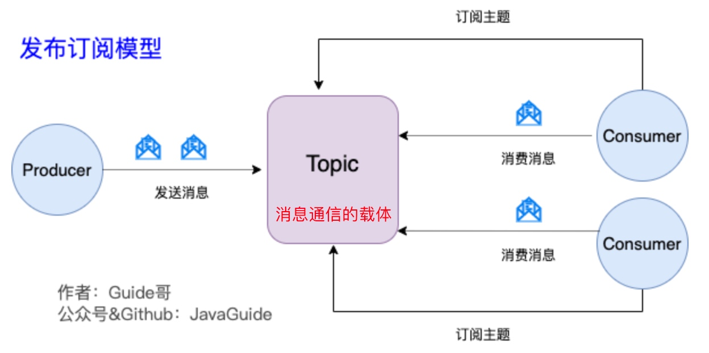
Partition(分区) 属于 Topic 的一部分。一个 Topic 可以有多个 Partition ，并且同一 Topic 下的 Partition 可以分布在不同的 Broker 上，提供了更好的并发能力以及容灾能力。
如何保证消息有序、不丢失、不重复
消息有序
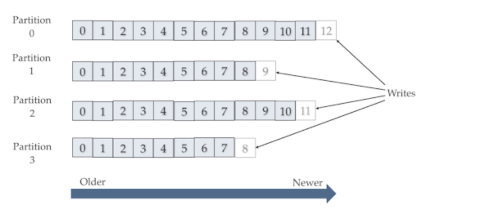
每次添加消息到分区的时候都会采用尾加法，Kafka 只能为我们保证分区中的消息有序。为了保证同一订单 A 的创建、支付、发货的有序性，通过 Hash 将同一语义的消息们放到一个队列中，就能解决下图的问题了：
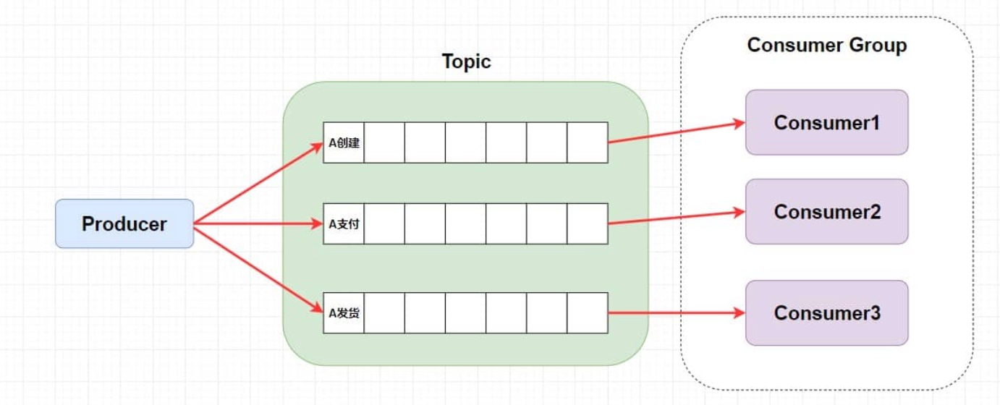消息不丢失
1）生产者丢失消息：生产者 send 之后消息可能因为网络原因没有发送过去
通过回调函数的方式异步的捕获成功或失败的响应。1
2
3
4
5ListenableFuture<SendResult<String, Object>> future = kafkaTemplate.send(topic, o);
future.addCallback(
result -> logger.info("生产者成功发送消息到topic:{} partition:{}的消息", result.getRecordMetadata().topic(), result.getRecordMetadata().partition()),
ex -> logger.error("生产者发送消失败，原因：{}", ex.getMessage())
);同时还可以设置合理的生产者 retries 次数，通常为 3。
2）消费者丢失消息：消息在分区中分配 offset，消费者拉取到分区中消息时，消费者就会自动提交 offset。3）Kafka 实例弄丢消息：分区中的多副本机制包含 leader 和 follower，假如 leader 副本所在的 broker 突然挂掉，那么就要从 follower 副本重新选出一个 leader ，但是 leader 的数据还有一些没有被 follower 副本的同步的话，就会造成消息丢失。
消息不重复
根本原因就是当关闭了消费者的自动提交 offset，采取手动提交之后，已经消费的 offset 没有成功提交。
方案一（最有效）：利用 Redis set、MySQL 主键来幂等；
方案二：
和消费者丢失消息的解决方案互斥，通常来说会在允许延迟的场景中采用拉取到消息即提交 offset 来解决不重复问题，消息丢失则通过数据兜底避免。
RocketMQ
特点
- 吞吐量和 Kafka 都是十万级别的，最高档；
- 阿里系 Java 开发的开源项目。
RocketMQ 的模型和 Kafka 是一样的，只不过将分区的概念替换成队列，功能上没有差别。
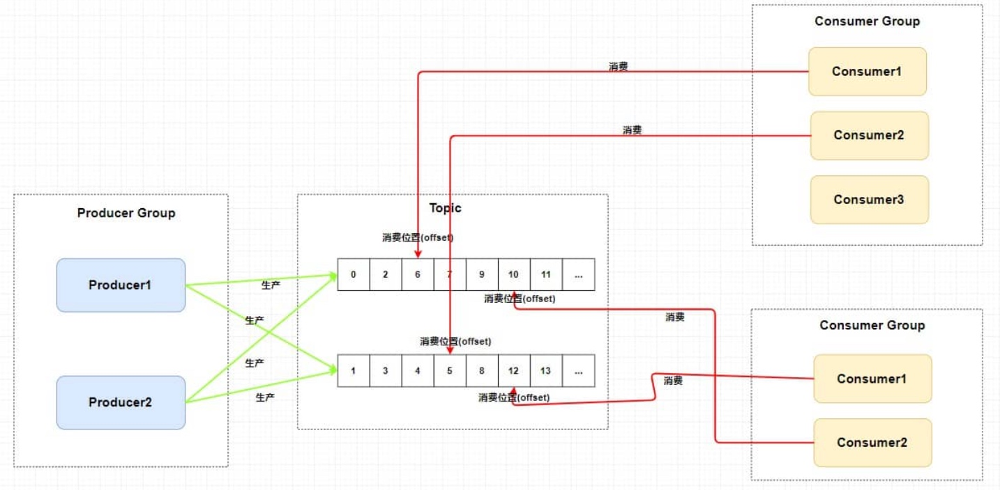
发布订阅模式中一般会涉及到多个消费者组，而每个消费者组在每个队列中的消费位置都是不同的。如果此时有多个消费者组，那么消息被一个消费者组消费完之后是不会删除的(因为其它消费者组也需要），它仅仅是为每个消费者组维护一个 offset。
Kafka、RocketMQ 支持广播消费（RabbitMQ是交换机层面的广播）：
- 每个分区（队列）只能被一个消费组中的一个消费者消费：为了保证队列内消息消费的有序性，如上图所示。
- 如果多个消费者属于不同的消费组，则不同消费组可以并行独立地消费相同的分区（队列），从而实现广播消费的效果。
RocketMQ 的分布式架构

第一、Broker 做了集群并且还进行了主从部署；
第二、为了保证 HA ，NameServer 也做了集群部署，但是请注意它是「去中心化」的。在 RocketMQ 中是通过 单个 Broker 和所有 NameServer 保持长连接 ，并且在每隔 30 秒 Broker 会向所有 Nameserver 发送心跳，心跳包含了自身的 Topic 配置信息，这个步骤就对应这上面的 Routing Info；
第三、生产者需要向 Broker 发送消息的时候，需要先从 NameServer 获取关于 Broker 的路由信息 Routing Info；
第四、消费者通过 NameServer 获取所有 Broker 的路由信息后，向 Broker 发送 Pull 请求来获取消息数据。
RabbitMQ 是基于主从（非分布式）做高可用的，主要是采用镜像集群模式。
【我的一些理解】
分布式和集群都是为了「提升并发能力」的组织架构：
分布式是以缩短单个任务的执行时间来提升效率的，而集群则是通过提高单位时间内执行的任务数来提升效率。换句话说，分布式是将整个系统拆分成不同的服务，集群是将同一个服务通过多安排人手的方式来处理。

主从是和前面两个不同的，本质区别是主从架构是「中心化」的（主节点负责所有的写入操作，并通过同步机制将数据传递给从节点），目的是「备份容灾」。而集群系统内部也可以通过主从方式来实现容灾，比如 RocketMQ 的 Broker Cluster：
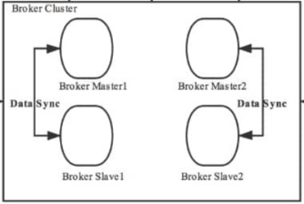
RabbitMQ、Kafka、RocketMQ 的比较
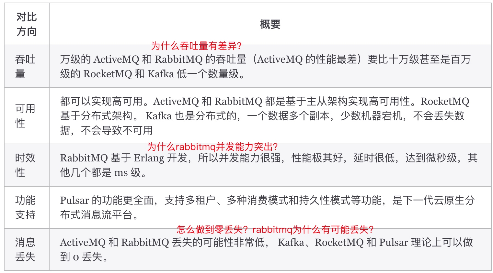
• 并发量：指的是同一时间消息队列能支持的活跃连接数量（如生产者和消费者连接数）。
• 吞吐量：指的是单位时间内消息队列系统能够处理的消息数量（如每秒处理百万条消息）。
RabbitMQ 基于 Erlang 的并发模型，通过 Channel 复用 TCP 连接，大大提升了 MQ 的并发能力，可以达到「微秒」级别的时延。
Kafka 唯一的一点劣势是有可能消息重复消费（消费完成但 offset 没有提交成功），那么对数据准确性会造成极其轻微的影响，在大数据领域中以及日志采集中，这点轻微影响可以忽略，这个特性天然适合大数据实时计算以及日志收集。
Kafka 和 RocketMQ 的核心是日志存储，采用多副本同步机制，消息存储可靠性设计是它们的强项；RabbitMQ 的设计是内存优先，持久化存储需要额外配置，更注重消息传递的灵活性和低延迟。
Redis
Redis 做消息队列的缺点有哪些？
源自 https://www.xiaolincoding.com/redis/data_struct/command.html#%E5%BA%94%E7%94%A8%E5%9C%BA%E6%99%AF-9
消息可能会丢失
1）Redis 中间件：会，Redis 持久化本身就可能导致消息丢失、外加主从复制时也有丢失数据的风险；
2）生产者：不会，只要正确处理响应 ack 或异常，并重发消息，就不会出现丢失；
3）消费者：不会，Stream 采用内部队列(Pending List)留存每个消费者读取、但还未确认的消息。消息不可堆积
Redis 的数据都存储在内存中，这就意味着一旦发生消息积压，则会导致 Redis 的内存持续增长，如果超过机器内存上限，就会面临 OOM 的风险。
但 Kafka、RabbitMQ 专业的消息队列它们的数据都是存储在磁盘上，当消息积压时，无非就是多占用一些磁盘空间。